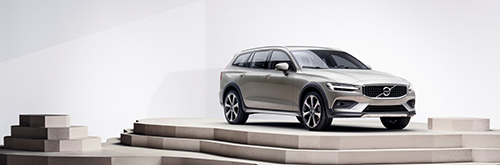
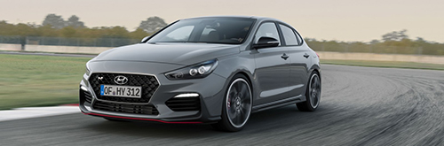
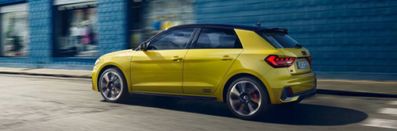

V60 Cross country
Volvo presenteert de V60 Cross Country, het opgeruigde broertje van de burgermans-V60. Volgens de Zweden is het model zeer geschikt om ook eens buiten de geplaveide paden te treden vanwege de grotere bodemvrijheid. Kan zijn, maar de meesten zullen vooral op het stoerdere uiterlijk vallen.

Hyundai i30 N
Hyundai beloofde het leven zuur te maken van de Golf GTI en vergelijkbare gevestigde hot hatch-namen en daar was niets aan gelogen. Sinds de vijfdeurs i30 N begin dit jaar op de markt kwam hebben 3.000 Europese kopers dit rij-ijzer van Zuid-Koreaanse makelij al weten te vinden. Een voortvarende start, die vanaf de Autoalon van Parijs versterking krijgt van de i30 N Fastback.
Toyota Auris
Toyota heeft zich bedacht. De op de Autosalon van Genève gepresenteerde gloednieuwe Auris zal anders heten wanneer 'ie begin volgend jaar bij de Europese dealers staat. Het iconische Corolla wordt ervoor afgestoft.

Audi A1 Sportback-epic
Ook presenteert Audi een A1 Sportback edition one. Het design is Audi ten voeten uit. In het interieur valt het digitale instrumentarium op. Audi levert de A1 Sportback als 30 TFSI met 116 pk motor. Een handgeschakelde zesbak is standaard, de zeventraps S tronic automaat is een optie. Een 25 TFSI 95 pk sterke instapmotor volgt later dit jaar. De vanafprijs van die uitvoering wordt dan bekend.